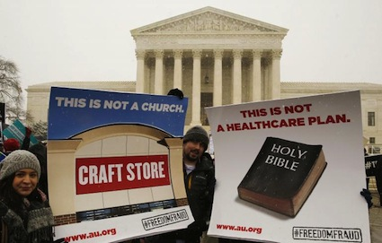
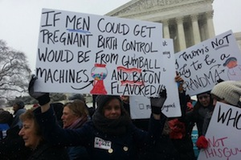

<!DOCTYPE html>
<html>
<head lang="en">
    <meta charset="utf-8"/>
    <meta name="viewport" content="width=device-width, initial-scale=1.0"/>
    <title>Mobile friendly BTL | Welcome</title>
    <link href='http://fonts.googleapis.com/css?family=Alegreya+Sans' rel='stylesheet' type='text/css'>
    <link rel="stylesheet" href="css/foundation.css"/>
    <link rel="stylesheet" href="css/app.css"/>
    <script src="js/vendor/modernizr.js"></script>
    <script src="phonegap.js"></script>
    <script src="js/vendor/handlebars-v1.3.0.js"></script>
</head>
<body>
<div id="main-content">
<!--empty div for page content from main template -->
</div>

<script id="main-tpl" type="text/x-handlebars-template">
    <!--  top bar code -->
    <!--<nav class="top-bar hide-for-small-down" data-topbar>
            <ul class="title-area">
                <li class="name"></li>
                <li class="toggle-topbar menu-icon"><a href="#"><span>Menu</span></a></li>
            </ul>
            <section class="top-bar-section">
                <ul>
                    <li class="active"><a href="/">Home</a></li>
                    <li class="has-dropdown"><a href="/infoonbtl.html">ABOUT BTL</a>
                        <ul class="dropdown">
                            <li><a href="/infoonbtl.html#History">History</a></li>
                            <li><a href="/infoonbtl.html#Staff">Staff</a></li>
                            <li><a href="http://www.squeakywheel.net">
                                Squeaky Wheel Productions</a></li>
                        </ul>
                    </li>
                    <li class="has-dropdown"><a href="/btlarchives.html">Archives</a>
                        <ul class="dropdown">
                            <li><a href="/btlarchives.html">
                                Current Year’s Programs</a></li>
                            <li><a href="/archives-older.html">
                                Previous Years’ Programs</a></li>
                            <li><a href="https://lists.riseup.net/www/arc/btlqa">
                                BTL Q&amp;A Transcripts</a></li>
                        </ul>
                    </li>
                    <li class="has-dropdown"><a href="/btlbroadcastsked.html">Schedule</a>
                        <ul class="dropdown">
                            <li><a href="/btlbroadcastsked.html#UnitedStates">US</a></li>
                            <li c><a href="/btlbroadcastsked.html#International">
                                International</a></li>
                        </ul>
                    </li>
                    <li class="has-dropdown"><a href="/affiliates.html" title="Learn how to air BTL">
                        For Stations</a>
                        <ul class="dropdown">
                            <li><a href="/affiliates.html#BroadcastQualityMP3">
                                Current Broadcast MP3</a></li>
                            <li><a href="/affiliates.html">Affiliate Info</a></li>
                        </ul>
                    </li>
                    <li class="has-dropdown"><a href="/supportBTL.html">Support BTL</a>
                        <ul class="dropdown">
                            <li><a href="/supportBTL.html#Volunteer">Volunteer</a></li>
                            <li><a href="http://www.squeakywheel.net/donate.html">Donate</a></li>
                        </ul>
                    </li>
                    <li><a href="http://www.squeakywheel.net/donate.html">Donate</a></li>
                    <li><a href="/contactBTL.html">Contact Us</a></li>
                </ul>
            </section>
        </nav>-->


    <div class="off-canvas-wrap" data-offcanvas>
        <div class="inner-wrap">
            <nav class="tab-bar">
                <section class="left-small">
                    <a class="left-off-canvas-toggle menu-icon"><span></span></a>
                </section>
            </nav>
            <aside class="left-off-canvas-menu">
                <ul class="off-canvas-list">
                    <li ><a href="/">HOME</a></li>
                    <li ><a href="/infoonbtl.html">ABOUT BTL</a>
                        <ul >
                            <li><a href="/infoonbtl.html#History">History</a></li>
                            <li><a href="/infoonbtl.html#Staff">Staff</a></li>
                            <li><a href="http://www.squeakywheel.net">
                                Squeaky Wheel Productions</a></li>
                        </ul>
                    </li>
                    <li ><a href="/btlarchives.html">ARCHIVES</a>
                        <ul c>
                            <li><a href="/btlarchives.html">
                                Current Year’s Programs</a></li>
                            <li><a href="/archives-older.html">
                                Previous Years’ Programs</a></li>
                            <li><a href="https://lists.riseup.net/www/arc/btlqa">
                                BTL Q&amp;A Transcripts</a></li>
                        </ul>
                    </li>
                    <li ><a href="/btlbroadcastsked.html">SCHEDULE</a>
                        <ul >
                            <li><a href="/btlbroadcastsked.html#UnitedStates">US</a></li>
                            <li><a href="/btlbroadcastsked.html#International">
                                International</a></li>
                        </ul>
                    </li>
                    <li ><a href="/affiliates.html" title="Learn how to air BTL">FOR STATIONS</a>
                        <ul >
                            <li><a href="/affiliates.html#BroadcastQualityMP3">
                                Current Broadcast MP3</a></li>
                            <li><a href="/affiliates.html">Affiliate Info</a></li>
                        </ul>
                    </li>
                    <li ><a href="/supportBTL.html">SUPPORT BTL</a>
                        <ul >
                            <li><a href="/supportBTL.html#Volunteer">Volunteer</a></li>
                            <li><a href="http://www.squeakywheel.net/donate.html">Donate</a></li>
                        </ul>
                    </li>
                    <li><a href="http://www.squeakywheel.net/donate.html">DONATE</a></li>
                    <li><a href="/contactBTL.html">CONTACT US</a></li>
                </ul>
            </aside>
            <a class="exit-off-canvas"></a>

            <!-- now starts the actual content -->
            <header class="row">
                <div class="large-12 columns">
                    <h1>This Week on Between&nbsp;The&nbsp;Lines</h1>
                </div>
            </header>
            <div class="row">
                <div class="large-1 columns"></div>
                <div id="Content" class="large-11 large-offset-1 columns">

                    <p class="credit">Posted July 2, 2014 for week ending July 11, 2014</p>
                    <div class="segblock">
                        <hr>
                        <blockquote><h4>"The larger issues of corporate personhood are probably the things that really most need to be talked about. What is the religious freedom of a corporation; will it go beyond the narrow decision that (Justice) Alito wrote? It seems likely, given that there's so many other issues with the expansion of corporate personhood."</h4></blockquote>
                        <cite>Frederick Clarkson, a senior fellow with Political Research Associates</cite>
                        <hr />
                        <p>Listen to the entire program using these links, or to individual
                            interviews via the links appearing prior to each segment description
                            below.</p>
                        <p class="credit">
                            &nbsp;<a href="mp3/140711-btlv64.mp3">
                             &nbsp;64 kb/s</a>
                            &nbsp;<a href="/affiliates.html#BroadcastQualityMP3">
                             &nbsp;broadcast quality</a>
                            &nbsp;<a href="http://itunes.apple.com/podcast/between-the-lines-radio-newsmagazine/id387215195">
                             &nbsp;Podcast</a>
                        </p><hr/></div>
                    <!-- ================================================ -->

                    <div class="segblock">
                        <h3><a href="seg/140711af-btl-clarkson.html">Supreme Court Ruling Allows Up to 90 Percent of For-Profit Corporations to Impose Their Religious Beliefs on Their Employees</a></h3>

                        <p class="italic">
                            <a href="mp3/140711a-btl-clarkson.mp3">
                                </a> Interview with Frederick Clarkson, a senior fellow with Political Research Associates, conducted by Scott Harris
                        </p>
                        
                        <p>In a landmark ruling in the Burwell v. Hobby Lobby Stores case, the U.S. Supreme Court handed down a decision on June 30 that allows the owners of some for-profit corporations to impose their religious beliefs on their employees when it comes to health care issues. The five justices of the court&#x2019;s conservative majority held that family-owned businesses can deny their female workers contraceptives as part of their employee health insurance plan, when the owners object to certain forms of birth control required under the federal Affordable Care Act.

                            <a class="italic" href="seg/140711af-btl-clarkson.html">&nbsp;Story continues</a></p>
                    </div>
                    <!-- ================================================ -->

                    <div class="segblock">
                        <h3><a href="seg/140711bf-btl-brown.html">Project Investigates Pennsylvania Health Problems to Determine Links with Natural Gas Fracking</a></h3>

                        <p class="italic">
                            <a href="mp3/140711b-btl-brown.mp3">
                                </a> Interview with David Brown, director of Public Health Toxicology for Environmental and Human Health, Inc., conducted by Melinda Tuhus
                        </p>
                        
                        <p>In what is likely the first such study of its kind in the U.S., a team of scientists and public health professionals has examined a group of residents of southwestern Pennsylvania to determine if the health problems they report are the result of living near the industrial practice of &#x22;hydraulic fracturing&#x22; or drilling of horizontal wells for natural gas, known as &#x22;fracking.&#x22; That&#x27;s the process that involves drilling deep underground into tight shale formations, injecting a million or more gallons of water, sand and a list of secret chemicals, to shatter the rock and release the gas.

                            <a class="italic" href="seg/140711bf-btl-brown.html">&nbsp;Story continues</a></p>
                    </div>
                    <!-- ================================================ -->

                    <div class="segblock">
                        <h3><a href="seg/140711cf-btl-lopez.html">One Year After Supreme Court Dismantles Voting Right Act, 22 States Have Adopted New Voting Restrictions</a></h3>

                        <p class="italic">
                            <a href="mp3/140711c-btl-lopez.mp3">
                                </a> Interview with Tomas Lopez, counsel with the Brennan Center for Justice, conducted by Scott Harris
                        </p>
                        
                        <p>One year after the Supreme Court&#x2019;s controversial and narrow 5 to 4 ruling, which overturned a key section of the 1965 Voting Rights Act, nearly half the states across the country have imposed new obstacles to voting. These include restrictive voter ID laws, limited early voting hours and new requirements making voter registration more difficult. These election regulations ushered in by mostly Republican governors and legislatures since 2010, disproportionately affect the voting rights of minorities, young people, senior citizens and other voters viewed as likely to cast ballots for Democratic party candidates.

                            <a class="italic" href="seg/140711cf-btl-lopez.html">&nbsp;Story continues</a></p>
                    </div>

                </div>
            </div>
        </div>
        <!-- end inner wrap, must go after ALL content -->
    </div>
    <!-- end offcanvas -->
</script>

<script src="js/vendor/jquery.js"></script>
<script src="js/foundation.min.js"></script>
<script src="js/btl-main.js"></script>

<script>btlJsApp.initialize();</script>
</body>
</html>